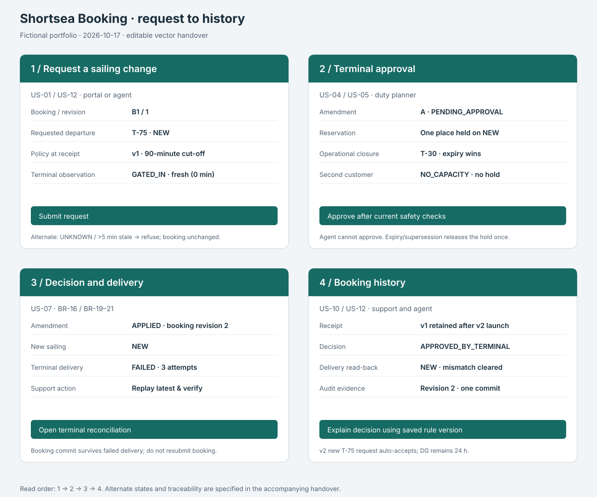

Change & delivery lab
One change from requirement to support: compare 90 and 60 minutes, compete for the last place, and repair a terminal mismatch.
Fictional fixtures. In-memory functional reference; production needs database transactions, a durable outbox and terminal read-back.
1. A versioned cut-off
A standard trailer arrives at T-75. Existing v1 requests keep their original policy.
Choose Compare.
2. One place, two customers
Choose a scenario.
3. Applied booking, failed terminal delivery
Replay repairs delivery. It never creates a second booking amendment.
Start with a delivery failure.
4. Pilot decision
Illustrative complete-week observations; GO still needs operational approval.
Four-screen handover flow
Editable SVG source for import into Figma; live HTML wireframes remain available. Open the Figma flow. Imported vector handover; human validation remains pending.
